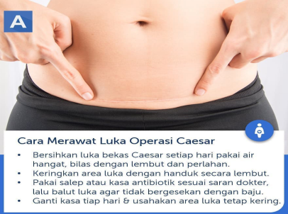

Cara perawatan luka post operasi sesar dan luka jahit perineum

- Menjaga kebersihan luka bekas operasi dengan menggunakan kassa.
- Pastikan tidak mengangkat benda yang berat berat terlebih dahulu
- Tidak mengikat perut terlalu kencang (menggunakan stagen)
- Gunakan celana dalam sebaiknya di atas luka operasi maupun di bawah luka operasi dan bila ada keluhan keluar rembes nanah maupun darah dari bekas luka operasi segera ke fasilitas kesehatan untuk di periksa.
- Menjaga kebersihan luka jahit perineum dengan menggunakan kompres kassa betadine
- Bila terdapat pembengkakan pada area luka jahitan rendam menggunakan air pk.
- Jaga kebersihan daerah kewanitaan.